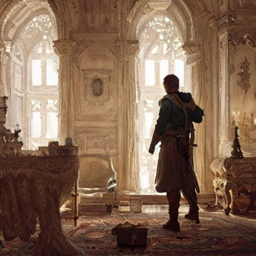

Você escolheu a 2ª opção

Os seguidores questionaram a ética e a justiça do plano de Lord Grey. Eles sugerem uma reunião pacífica entre Lord Grey e o Bispo Benedict para resolver suas diferenças. O Bispo Benedict concorda com a proposta e, após algumas horas de negociação, eles chegam a um acordo que beneficia a todos.
Enquanto isso, uma figura misteriosa estava observando tudo de perto. Era um bandido conhecido como Robin Hood, que acreditava na justiça social e na igualdade. Ele tinha duas opções: